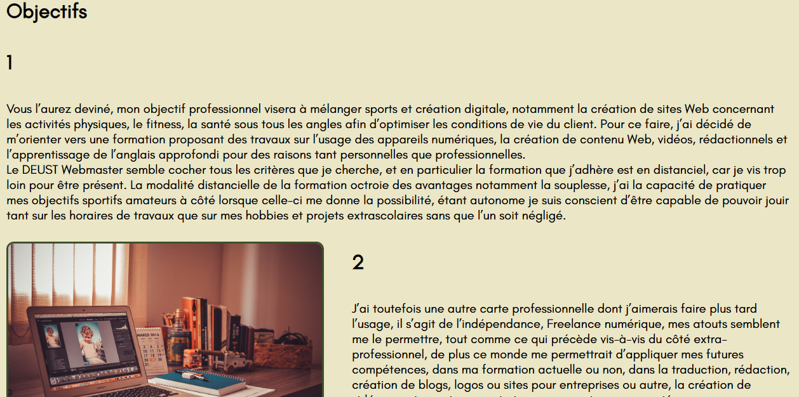
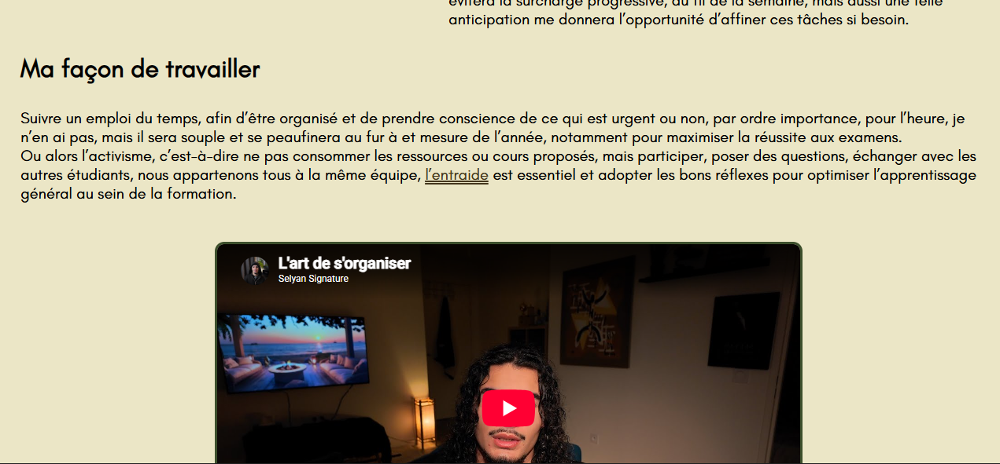

Découverte du HTML et CSS
Découverte du HTML et CSS
Cette réalisation peut paraître anodine, en réalité elle est incontournable pour tout développeur web. En effet sans maîtrise des bases de ces langages de balisages et de style, il est impossible de créer un site web. Ce premier exercice a donc constitué mon premier cap dans cette formation, afin de continuer à réaliser des missions de difficulté croissante.

J'ai également appris, en parallèle, à héberger un site web statique sur un serveur distant. Pour cela, j'ai découvert le protocole FTP et le logiciel FileZilla, qui permettent de transférer les fichiers de mon ordinateur vers un serveur afin de rendre le site accessible en ligne. Une autre méthode étudiée consistait à utiliser GitHub Pages, un service qui permet de publier gratuitement un site web statique à partir d'un dépôt GitHub. Ces deux approches m'ont permis de comprendre qu'une fois un site créé sur son ordinateur, il faut également être capable de le mettre en ligne pour que d'autres personnes puissent le consulter. J'ai ainsi découvert une première partie du processus de publication d'un site web, au-delà de sa simple création.
